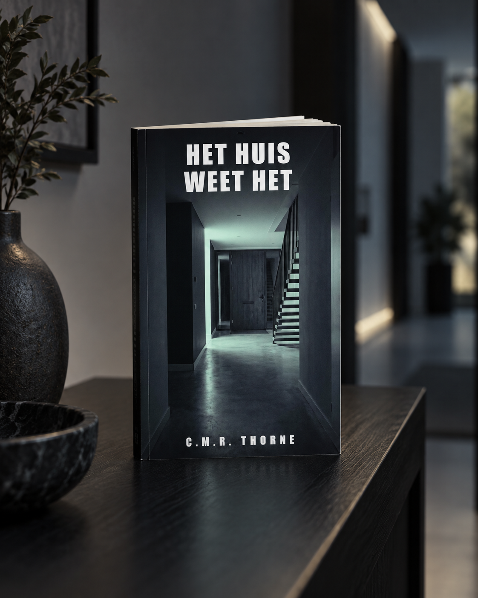
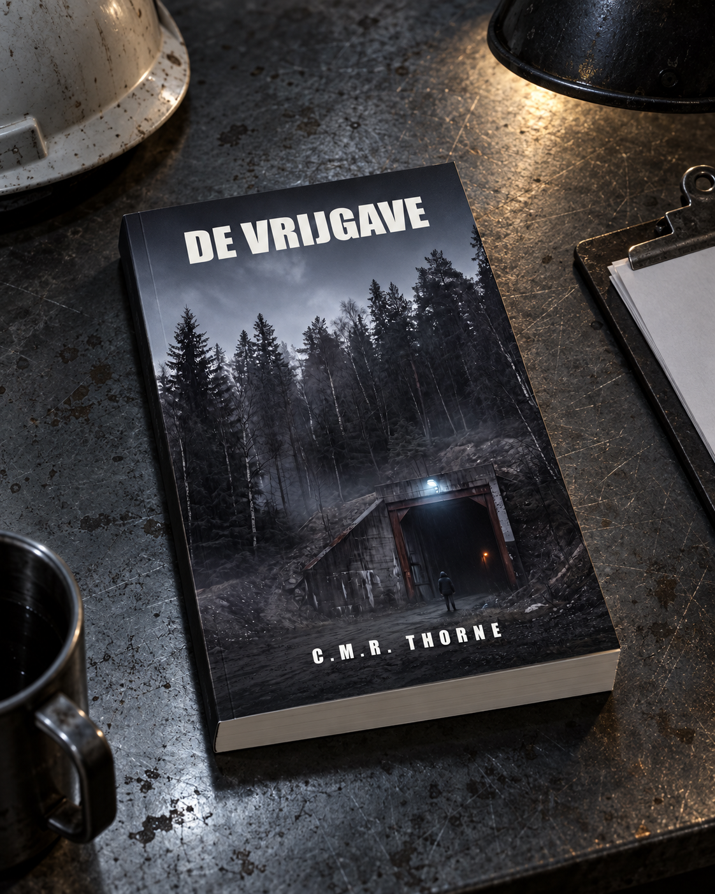
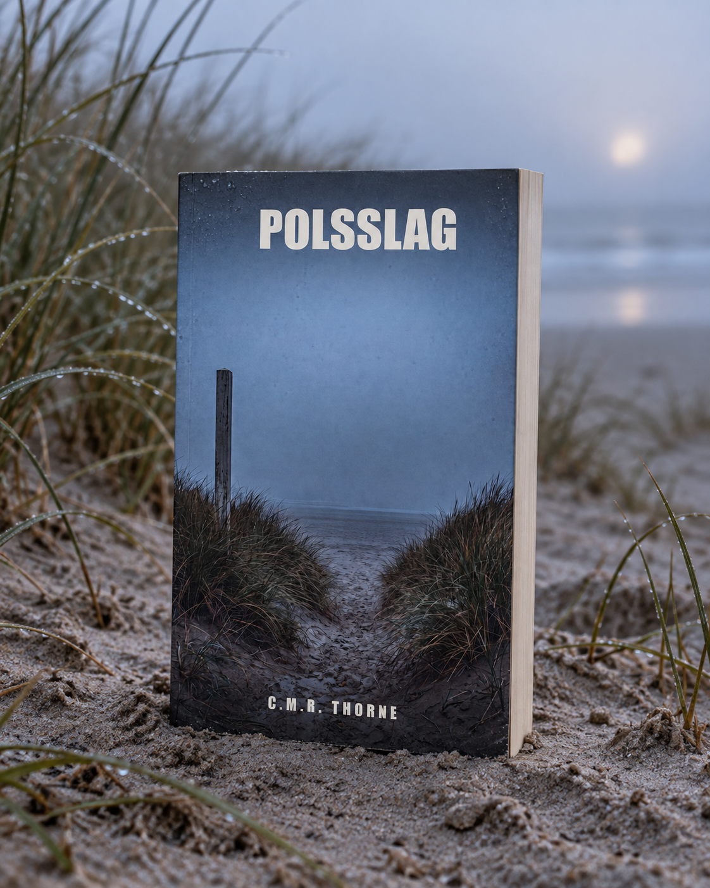
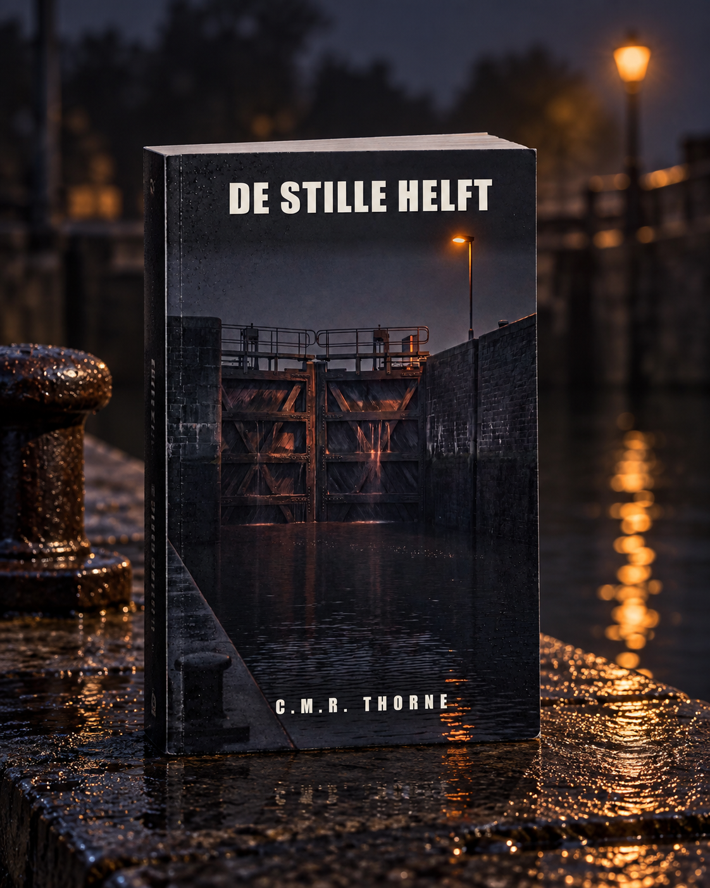
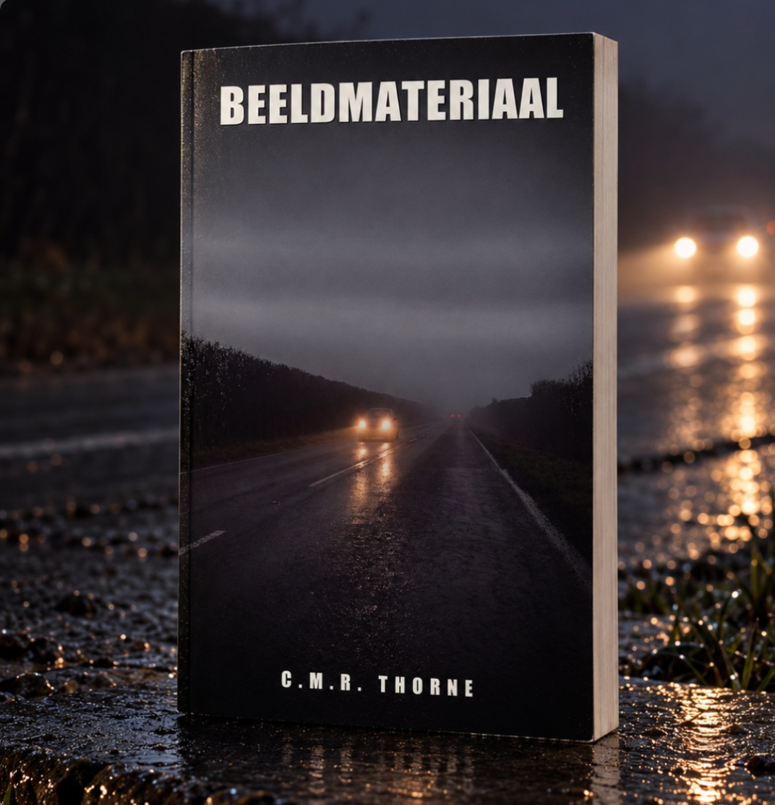
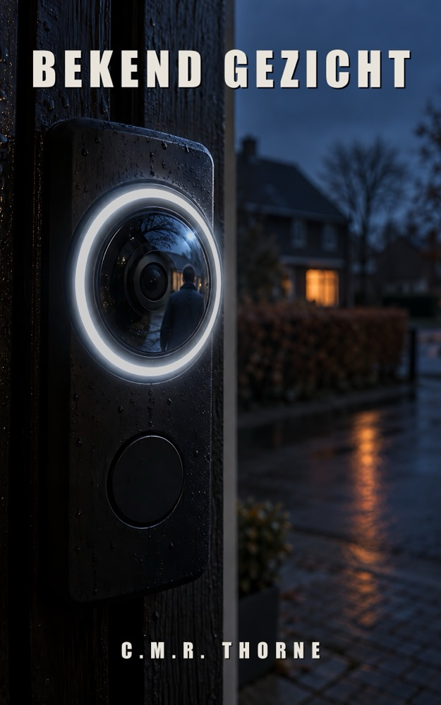

DOSSIER 01

Nu verkrijgbaar
Het Huis Weet Het
Om 03:12 ging de voordeur open. Een weduwnaar, digitale sporen en familiegeheimen.
Bekijk op AmazonOver dit boek en een leesfragment LOWLANDSPRESS
LOWLANDSPRESSPsychologische thrillers van C.M.R. Thorne, in vier talen. In elk deel keek er een apparaat mee.
Kies een boek

Om 03:12 ging de voordeur open. Een weduwnaar, digitale sporen en familiegeheimen.
Bekijk op AmazonOver dit boek en een leesfragment
Vijf doden. Een vervalste handtekening. En een zaak die acht jaar begraven bleef.
Bekijk op AmazonOver dit boek en een leesfragment
Zijn horloge registreerde zijn laatste hartslag. Alleen klopt de grafiek niet.
Bekijk op AmazonOver dit boek en een leesfragment
Een DNA-test onthult dat de jongen aan haar tafel niet haar biologische zoon is.
Bekijk op AmazonOver dit boek en een leesfragment
Een oud dashcamfragment bewijst dat het onderzoek naar de dood van Niek Veldkamp op het verkeerde uur is gebouwd.
Bekijk op AmazonOver dit boek en een leesfragment
De deurbel van de buurvrouw zet een naam onder de man op de stoep. Alleen is hij het niet.
Over dit boek en een leesfragmentHet manuscript is af in het Nederlands, Engels, Duits en Spaans. De editie wacht op de laatste stap bij de winkels.
Een schoolpasje registreerde wie er die middag naar binnen ging. Haar eigen scan staat op het verkeerde uur.
Deel zeven wordt geschreven. Verschijningsdatum nog niet bekend.
Winkels laten vooral zien wat gelezen en besproken wordt, en zonder dat blijft een onbekende auteur onzichtbaar. Een paar eerlijke regels zijn genoeg. Schrijf ze waar u het boek kocht; voor Amazon staan de directe links hieronder.
Schrijf een recensie: